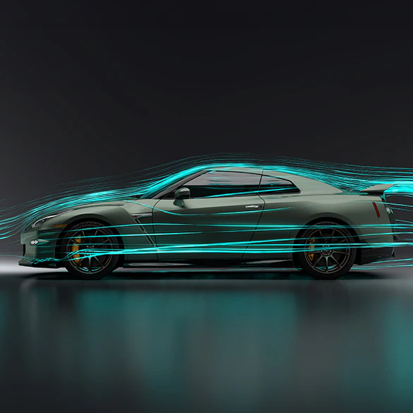

MOTOR
En lugar de tener un motor grande sediento de combustible, el GT-R está propulsado por un V6 de 3.8 litros con doble turbocompresor de tamaño ideal, ensamblado a mano por maestros artesanos y fabricado para tener una gran solidez

AERODINAMICA
La incesante puesta a punto de la aerodinámica del GT-R ahora incorpora nuevas fascias delantera y trasera, además de un nuevo spoiler trasero para aumentar la carga aerodinámica sin agregar resistencia. ¿El resultado? Un coeficiente de resistencia aerodinámica increíblemente limpio de sólo 0.26 Cd.
AWD
El avanzado sistema de tracción ATTESA ET-S® permite una distribución variable del torque entre los ejes delantero y trasero, ofreciendo la sensación y la respuesta de un auto de tracción trasera con la confianza de la tracción en las cuatro ruedas.
VELOCIDADES
Cambia tu forma de conducir. La transmisión de doble embrague y 6 velocidades del GT-R emplea embragues independientes para las marchas pares e impares, lo que hace que los cambios de marcha sean muy rápidos cuando usas el modo R.
SISTEMAS DE MODOS
Tres interruptores permiten ajustar sobre la marcha parámetros de rendimiento específicos para la transmisión,
la suspensión y el sistema de control dinámico del vehículo. Las opciones son el modo R, el modo normal y los modos especiales.
Caracteristicas principales
